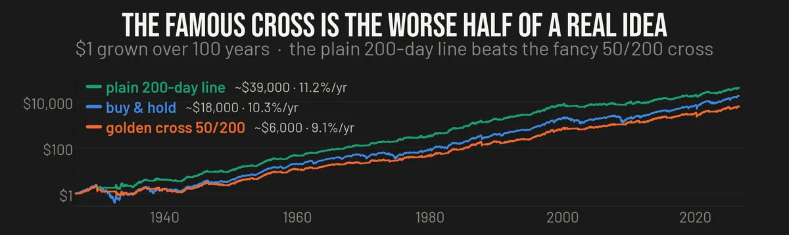
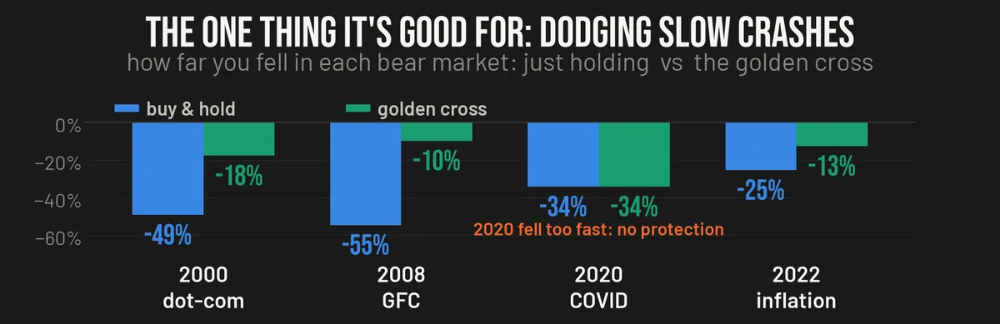

Does the Golden Cross Work? 100 Years of Data
JUST A SEATBELT.
This test trades the 50/200-day golden cross on 100.1 years of Fama-French daily US total-market returns (1926-07-01 to 2026-07-31), with cash earning T-bills and 5 bps switching costs. The cross turned $1 into about $6,149 (CAGR 9.1%) against buy-and-hold's about $17,630 (CAGR 10.3%). It did reduce risk in slow bear markets, cutting 2008 to -9.7% against -54.6% and the worst drawdown to -61.7% against -84.1%, but gave no protection in the fast 2020 crash (-34.2% either way). A simpler rule, holding only while price is above its 200-day average, made 11.2% a year with a -33.8% worst drop. The cross costs money and works mainly as a seatbelt.


The receipts
The code and result files behind every number on this page.
Browse the receipts for this episodeRelated autopsies
- Does “Sell in May and Go Away” Work? 100 Years of DataVerdict: STAY IN MAY.
- Is the 4-Hour Chart Better Than the Daily for Crypto? 5 Years TestedVerdict: REVERSED.
- Does Buying When the VIX Tops 35 Work? 25 Years TestedVerdict: HALF-TRUE.